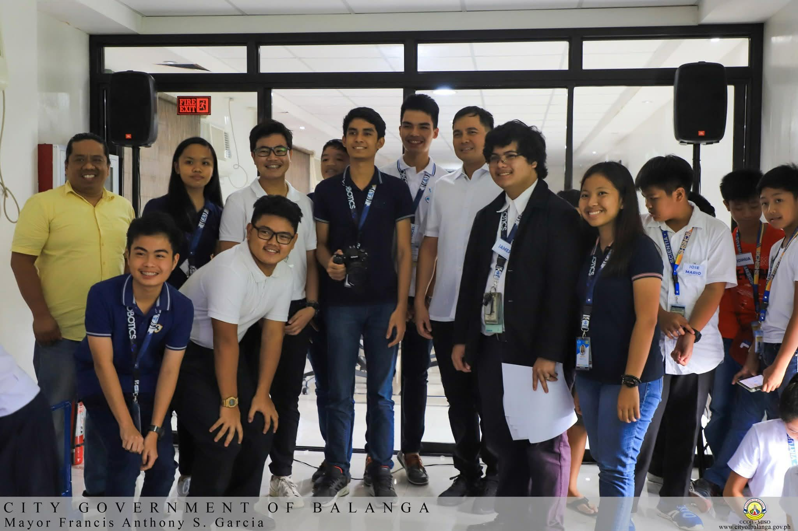

Renaissance · Research & Public Conversation · Case · 2019
Pitching a SMART Bin to Balanga City
I was invited to join a robotics team from Balanga City developing a SMART Bin concept. My contribution centered on the research and presentation deck used to pitch the idea to the city's then-Mayor.
Engagement record
The experience at a glance.
- Context
- Invited member of a Balanga City robotics team
- Year
- 2019
- Engagement
- SMART Bin proposal and pitch
- Role
- Research and presentation deck
- Audience
- Balanga City local government leadership
- Format
- Research-backed presentation and live pitch
- Focus
- Translating a robotics concept into a proposal for public-sector consideration
From prototype to proposition
The challenge was not only to have an idea, but to make the idea understandable to people who had to assess it.
In 2019, I joined the team with a specific contribution: research and the presentation deck. That meant taking the SMART Bin concept and helping shape the information around it into a form that could be presented clearly to local government decision-makers.
The work sat between technical development and public communication. The robotics team needed a concept that could function, but the pitch also needed a structure that explained why the idea mattered and why it was worth considering.
Documentary record
The team behind the pitch.
The robotics team during the Balanga City engagement.

Research as translation
Research became useful when it helped the team move from technical language to a public-facing argument.
My part of the project required deciding what information belonged in the pitch, how it should be sequenced, and how the presentation could support the team's explanation of the SMART Bin concept.
It was an early lesson in a form of work I would encounter again later: evidence does not speak for itself. Someone still has to decide what is relevant, organize it coherently, and communicate it in a way that makes discussion possible.
Ideas in a public room
A proposal changes when it has to meet an institution rather than remain inside the team that created it.
Presenting the concept to the city's then-Mayor placed the project in a different setting. The idea was no longer only something the team understood internally. It had to be presented to someone outside the development process who would encounter it through the research, explanation, and structure of the pitch.
That transition from making to explaining is what places this experience within Research & Public Conversation: the concept had to leave the team, enter an institutional setting, and become something other people could question and evaluate.
Research & Public Conversation
Return to the research and public conversation record.
Explore experiences where research, evidence, interpretation, and presentation had to meet institutions, audiences, and real-world decisions.
Research & Public Conversation →